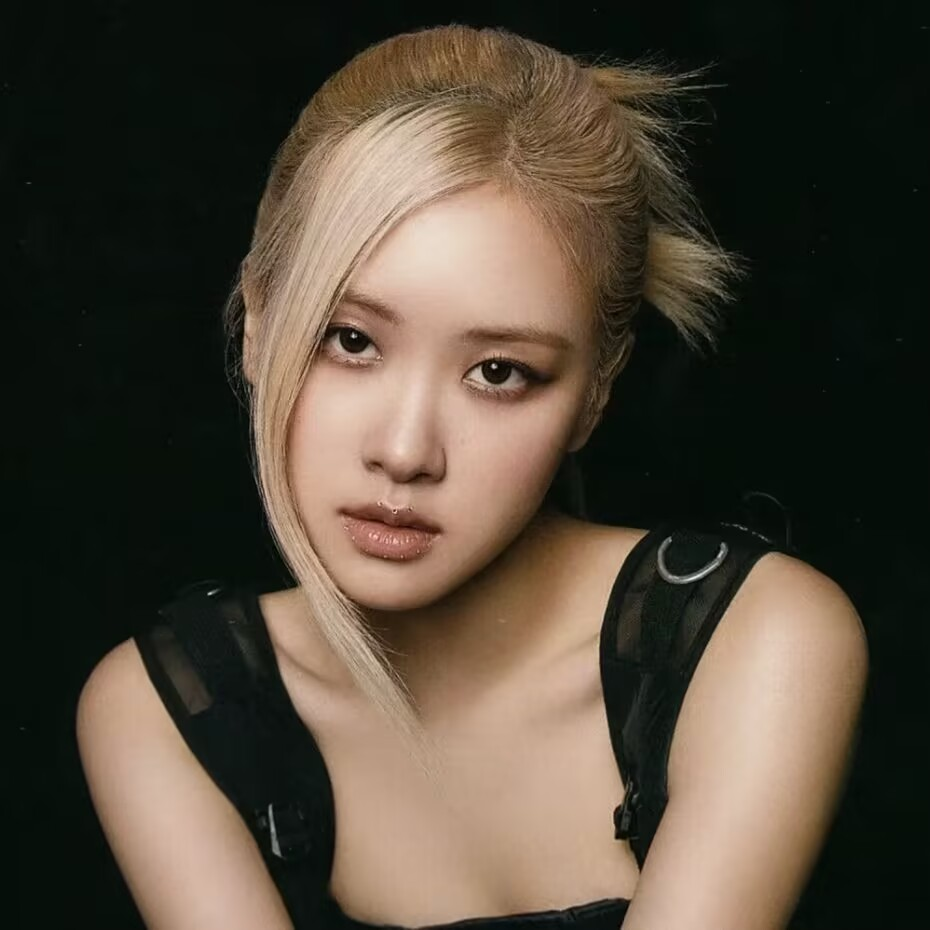
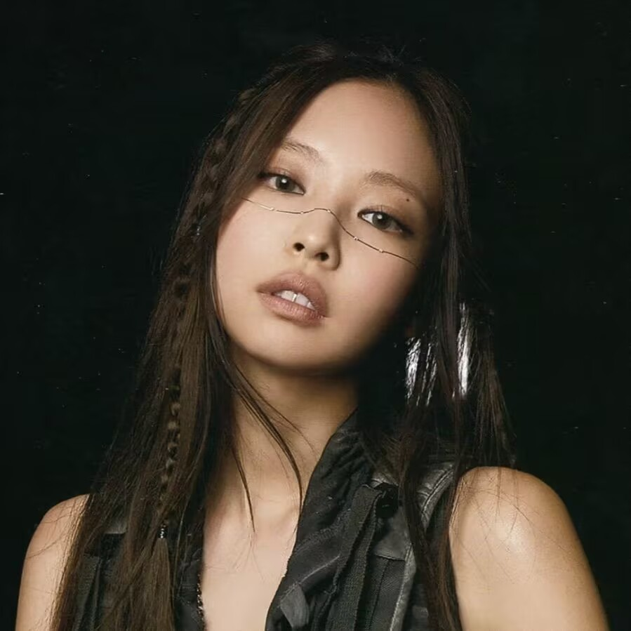
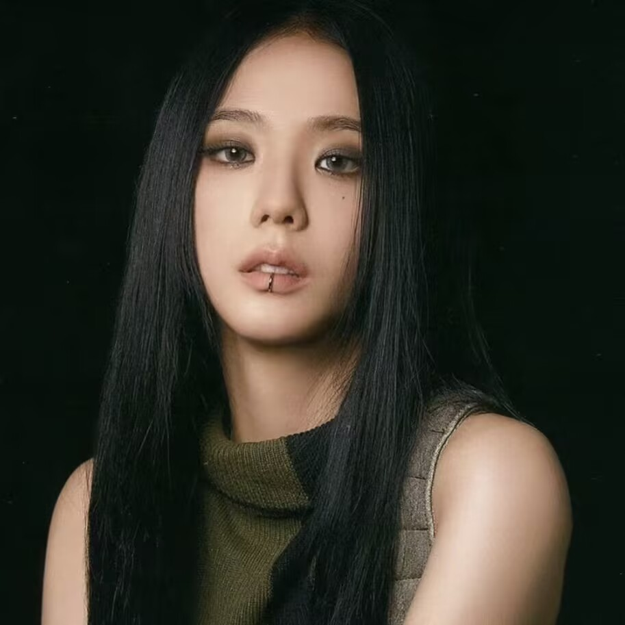

Member Introduction
Lisa (Lalisa Manobal)
Born on March 27, 1997, in Buriram Province, Thailand, Lisa is a Thai pop singer and dancer who is a member of the South Korean girl group BLACKPINK.

Park Chae-young (ROSÉ)
Born on February 11, 1997, in Auckland, New Zealand, Rosé holds dual citizenship in South Korea and New Zealand and is a member of the South Korean girl group BLACKPINK.

Jennie Kim (Jennie)
Born on January 16, 1996, in Cheongdam-dong, Gangnam District, Seoul, South Korea, Jennie is a South Korean singer and a member of the girl group BLACKPINK.

Kim Ji-soo (Jisoo)
Born on January 3, 1995, in Gwacheon, Gyeonggi Province, South Korea, Jisoo is a South Korean singer, actress, and host, as well as a member of the girl group BLACKPINK.